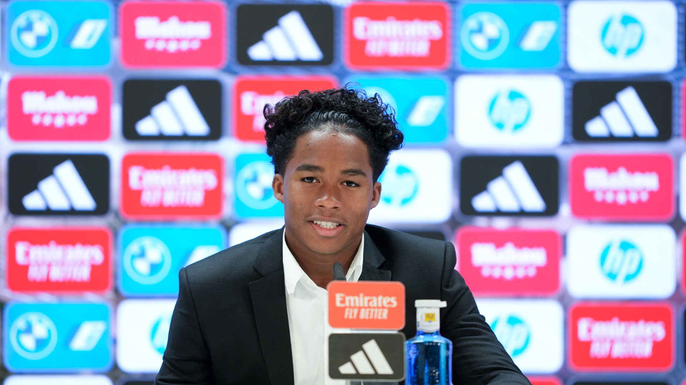
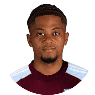
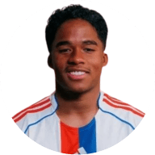

Actualidad del Club

Endrick: Renovado, El internacional brasileño, visiblemente emocionado con la oportunidad de seguir marcando goles.

Werner, a por más títulos: El delantero alemán tiene claras sus intenciones: "vamos a seguir ganando títulos".
Nuestros Capitanes
Kamara

Bailey

Endrick